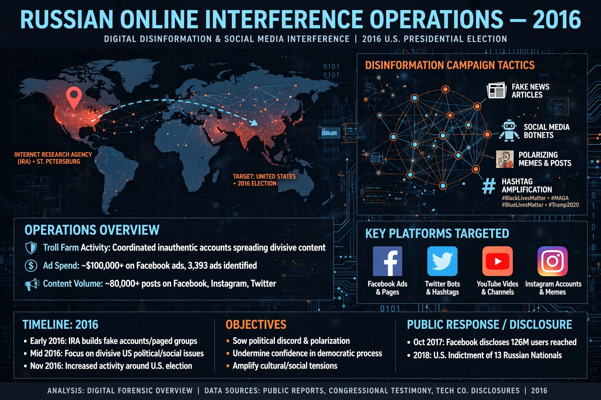

The Russian government interfered in the 2016 United States elections with the goals of harming the campaign of Hillary Clinton, boosting the candidacy of Donald Trump, and increasing political and social discord in the United States, according to the US intelligence community.
The Saint Petersburg-based Internet Research Agency, funded by Yevgeny Prigozhin, created thousands of fake social-media accounts posing as Americans, organized rallies, and bought political advertising designed to sow division on issues such as race, immigration, and gun rights.
Russian military intelligence (the GRU) hacked the Democratic National Committee, the Democratic Congressional Campaign Committee, and Clinton campaign chair John Podesta, releasing stolen emails through DCLeaks, Guccifer 2.0, and WikiLeaks.
The Obama administration expelled diplomats and imposed sanctions in December 2016. Special counsel Robert Mueller indicted Russian nationals and entities, and the Senate Intelligence Committee's bipartisan report confirmed the interference campaign. Russia has denied the allegations.
Investigations found no evidence that vote tallies were changed, though Russian actors probed election infrastructure in multiple states.